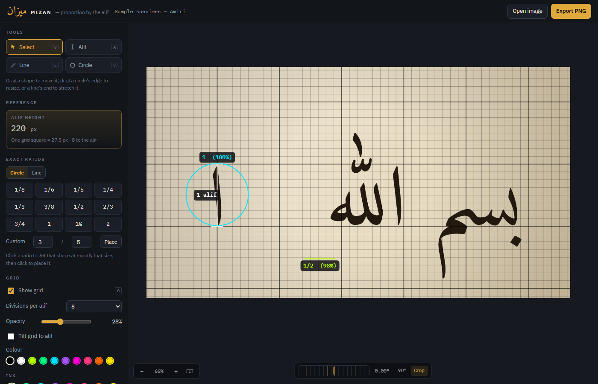

Mizan puts that system on a photograph. Measure the alif once and it builds a grid from that height, then reports every line and circle you draw as a fraction of it — 1/4 (98%) — so a proportion you can see becomes a proportion you can state.
One HTML file, no install, no account. Your image never leaves your machine — everything is measured in the browser.
The working view

How it works
Drag it in, paste it, or pick a file. Shoot the page flat-on: a sheet photographed at an angle will not give honest ratios, whatever the tool says.
Drag the dial beneath the image: a pixel is a twentieth of a degree, and
Shift takes it down to a two-hundredth. The grid stays square
while the photograph turns under it, so you straighten until the script comes
into line — and anything you have already drawn turns with the sheet rather
than sliding off it. Crop trims the result back to an upright rectangle,
dimming what it takes rather than hiding it.
That single measurement is the unit. Hold Shift to lock it to
true vertical, or let it follow a slanted hand and tilt the grid to match.
The alif is divided into equal parts — eight by default, with five and nine offered because those are the usual nuqta counts for naskh and thuluth. Heavier lines fall on whole alifs.
Lines and true circles, each labelled with its fraction of the alif. Export the whole sheet — image, grid and marks — as one PNG, at one to four times the sheet’s own pixels, with the dimensions and file size shown before you save.
Reading the numbers
Nearest to a quarter of an alif, and within 98% of exactly that. A near-perfect quarter.
The nearest fraction available was a half — but the shape is a long way off it. The percentage is the honest half of the reading.
Mizan searches every fraction up to the denominator you allow — quarters through sixteenths, eighths by default — and reports the closest, with its accuracy:
The panel also carries the raw pixel length and the exact decimal ratio, which is often the more useful number of the two. Narrow the denominator limit when you only care about the simple divisions; widen it when you are chasing a subtlety.
Exact ratios
Measuring answers what is this? Sometimes you want the opposite: where does a quarter of an alif actually fall? Click a ratio and you get a circle or line of exactly that dimension, which follows the pointer until you set it down. Exact by construction, so it always reads 100%.
Drawn from the centre outwards, so there is no way to produce an ellipse by accident. They report diameter by default; radius is a switch away.
Every stroke shares a single weight, set once, so nothing in the drawing implies a distinction the measurement does not make.
At the keyboard
| V A L C | Select, Alif, Line, Circle |
| Shift | while drawing, snaps a line to 15° steps and an alif to vertical |
| Space, or drag empty space | pan the sheet |
| Scroll · 0 | zoom · fit the image to the view |
| Backspace | delete the selection |
| Ctrl + Z | undo |
| Drag the dial · [ ] | straighten · Shift for hair-fine steps, brackets for a tenth of a degree |
| G · Esc | show or hide the grid · cancel a pending ratio |